대표작 / 2~4인 PC 협동 게임
커튼콜Curtain Call
미지의 존재에게 붙잡힌 단원들. 목숨을 걸고 무대에서 익힌 묘기로 친구들과 공장 탈출
4인 팀장 주형락 · 인간 대포 협동 재설계, 탈출로 A 전체 단독 설계와 골렘 추격 구현
공연 사이 잠깐의 자유시간에 이전 단원들의 흔적을 찾아 네 번째 날 아침까지 탈출. Unity 구현에서는 Codex로 씬별 조작값을 추적하고 회귀 검사로 확인
M3 외줄타기 0.8.9 · 11.22–23 최종 테스트 영상
팀 운영 개발 순서 결정과 플레이테스트 기준 설정
담당 씬 인간 대포 재기획 · 탈출로 전체 단독 설계 · 골렘 추격
협업 범위 대기실·리허설은 씬 담당자 제작, 멀티플레이·보상은 개발 총괄과 연동
제작 환경 Unity 6 · PC
Game overview
게임 진행 구조
위험한 묘기 끝에 터지는 더 큰 환호
공연으로 번 공동 자금은 부상 치료와 기물 구입에
한 번 더 벌지, 지금 가진 장비로 나갈지 동료와 함께 선택
공연으로 모은 공동 자금 외줄에서는 친구의 실수 한 번에 나까지 휘청. 위험한 길일수록 커지는 보상과 부상 위험 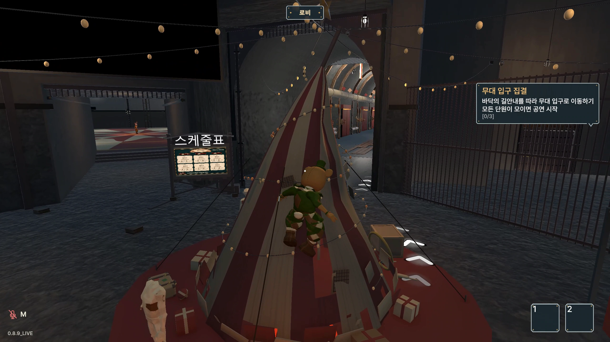
쉬는 시간의 출구 탐색 공연 사이에는 대기실 안쪽에서 단서 찾기. 밤에는 몸과 장비를 정비하고 다음 날 준비 무대에서 익힌 묘기로 탈출 공연에서 익힌 기술로 건너는 마지막 시설. 기한을 넘기면 새 단원으로 1일차부터 다시 시작 Gameplay
외줄과 공중그네 외줄 위 균형 잡기와 옆줄 점프. 탈출로에서는 외줄 끝을 공중그네의 출발점으로 활용
외줄 공연 · 두 플레이어의 이동 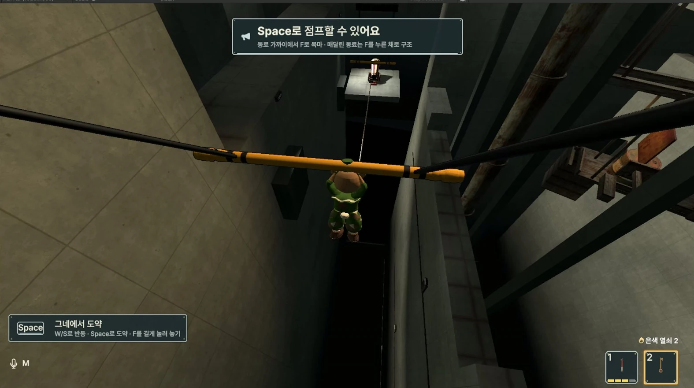
공중그네 · M2 개발 빌드의 봉 잡기 대포로 날아 외줄에 착지한 뒤 줄 끝의 봉으로 이동. 한 묘기의 착지점에서 다음 묘기로 이어지는 동선
Co-op design
인간 대포The Human Cannon
팀원의 초안을 인수해 2~4인 공통 규칙으로 공중·지상 역할 재설계 및 구현
초안 한 명이 날아가는 동안 지상에 남은 동료의 대기
바꾼 규칙 비행자가 봉을 잡아 톱 정지. 그 틈에 지상 동료가 트램펄린을 밀고 통과해 다음 착지를 받을 준비
AI로 비교한 초기안과 수정안 · 당시 입력 원문 “No pits or elevation changes; flat ground must not be confused with hazard-free ground.”
10월 7일 이미지 수정 기록. 연속된 평지 유지, 지상 동료 앞에도 피해야 할 장애물 추가. 공중 비행 궤적과 지상 담당의 위험이 두 시점에서 읽히는지 비교
비행자와 지상 담당의 시점 전환 공중 · 비행자 지상 · 받는 사람
봉에 매달려 지상 통로의 톱을 멈추는 비행자. 동료가 지나간 뒤 다음 착지로 이동
역할 이해와 동료 구조
역할을 이해했다는 응답 M2 10/10명, M3 중간 설문 8/8명. M3에서 동료 구조 연습을 더 원한 응답 4/8명
4인 테스트 후 쉴 수 있는 봉과 트램펄린 받기 판정 조정. 후속 관찰 항목은 착지를 놓친 직후 지상 담당의 첫 행동
둘이든 넷이든 같은 규칙
지상 담당은 한 명. 동료가 떨어질 곳을 읽고 트램펄린 이동
인원이 늘면 달라지는 건 착지 순서. 지상 담당은 같은 조작으로 다음 동료 받기
구간별 협동 행동 구간 공중 지상 출발 발사 간격 조절 착지점으로 이동 톱 관문 봉을 잡아 톱 정지 톱 아래 통과 쉼터 승강기 개방 승강기 탑승 후 역할 교대
지상에서 본 트램펄린과 대포 M3 인간 대포 공연장 · Unity 씬 재촬영 인간 대포 전체 구성도와 역할 인계
인간 대포 공연 구성도 직접 개정한 기획서의 도해 · 분리된 출발부터 최종 대포까지
CURTAIN CALL / AI 개발 사례
같은 봉, 씬마다 달랐던 도약 거리 공연에서 익힌 타이밍을 탈출로에서도 쓸 수 있도록, 케이블의 보이는 길이와 도약 계산을 분리
탈출로 실제 플레이 · 봉 양끝의 케이블에 주목
문제 천장이 높아 케이블이 긴 씬에서, 같은 각속도로 흔들어도 더 먼 도약
내 판단 천장 높이와 장치 배치는 레벨별로 유지. 도약에 쓰는 길이와 매달림 규칙만 공통 설정으로 이동
Codex에 맡긴 일 씬·프리팹의 참조와 중복 설정 추적, GameSettings 연결 수정, 재현 조건별 회귀 검사 보조
직접 확인 8개 씬·4개 프리팹의 변경 내역 대조. 장치 위치·회전·크기 변경 0건 두 번의 검사에서 확인한 것 · PlayMode 18/18 첫 실행 7건 중 2건 실패. 봉에서 떨어질 때의 옛 피해 기대값과 착지 신발 검사 초기화 수정 후, 매달림·낙하·착지 반동을 포함한 집중 검사 18건 통과
별도 전체 EditMode 검사 1,860건 중 15건 실패. 외줄 검사 1건 수정 후 집중 검사 69/69로 재확인, 미해결 14건
공통 설정 작업 기록 · Git fe3b7bda / d34b5043
Level design
탈출로The Escape Route
탈출로 A 전체 단독 설계. 분기와 합류, 기물 배치, 골렘 추격 기획 및 Unity 구현
M2 8분 타이머와 단일 경로. 이동봉 앞에 일행이 줄을 서던 구간
M3 한 명이 골렘의 시선을 끄는 동안 동료들은 익숙한 묘기로 다른 길을 선택한 뒤 같은 지점에서 합류
골렘과 탈출로 네 구간의 설계 읽기 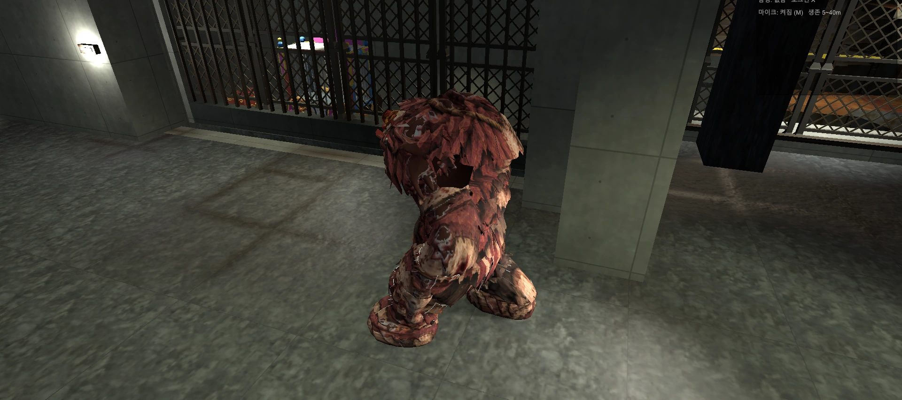
플레이테스트 빌드 · 추격자 조우 탈출로 A / 구간 탐색
01 골렘 추격 ↗ 02 컨베이어 분기 ↗ 03 반환교 합류 ↗ 04 최종 작업장 ↗
한 명이 골렘의 시선을 끄는 동안 발판을 건너는 동료. 잠시 길을 살필 여유와 오래 머물 때의 위험을 함께 설계
탈출로 A · 공간 모형 Unity 씬 좌표
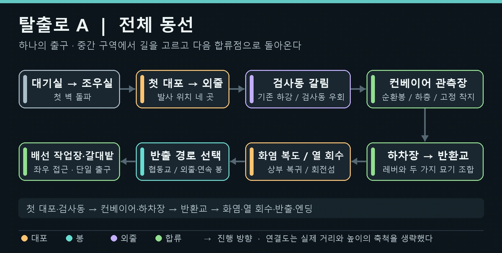
구간 탐색 전체 컨베이어 반환교 출구
이동봉을 기다릴지, 아래로 갈지 순환봉 기다리기, 하층 연속봉 타기, 대포로 고정 발판에 착지하기. 세 경로 모두 하차장에서 합류
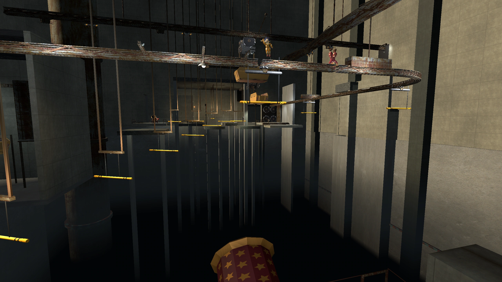
M3 탈출로 A · Unity 씬 재촬영 Unity 씬의 이동 기준점과 주요 발판으로 재구성한 3D 동선도 · 선은 구간 사이의 연결
최종 플레이테스트 · M3
추격이 시작된 순간,
공연에서 익힌 묘기를 스스로 꺼내 써야 하는 마지막 작업장. 최종 테스트의 두 질문은 추격에서 느낀 긴장과 그 순간 알아본 목표
1
2
최종 배선 작업장 0.8.9 · 실제 테스트 녹화 추격자 거구의 시선을 끌어 동료가 움직일 틈 확보벽면 배선 배선 전체 절단과 추격자 전원 처치 후 출구 개방
탈출로에 들어간 5명의 응답
추격에서 느낀 긴장감 5/5명
추격의 압박을 재미있게 느낀 응답 4/5명
추격 시작과 첫 행동에 더 분명한 안내를 희망 4/5명
다음 테스트에서 볼 것 거구가 나타난 직후의 역할 분담에 주목. 누가 추격자를 유인하고 누가 배선으로 향하는지, 두 단원의 첫 이동과 첫마디 관찰
대기실에서 단서를 찾은 직후 장소를 찾기 쉬웠다는 응답 6/8명. 가장 오래 막힌 구간으로 대기실 탐색·탈출 준비를 선택한 응답 5/8명. 다음 관찰 지점은 단서를 손에 넣은 뒤의 행동
재플레이 의향과 실제 재시작 다시 하고 싶다는 응답 8/8명, 같은 방에서 실제로 재시작한 응답 2/8명. 엔딩 뒤 무엇이 유지되고 초기화되는지 더 알고 싶었던 응답자 4/8명
설문과 플레이 로그의 집계 범위
2026년 11월 23일 실제 플레이 빌드 0.8.9 기준. 2일차 중간·종료 설문 각 8건, 일부 런 중복. 추격 항목의 표본은 종료 설문에서 탈출로에 진입했다고 답한 5명
18시 13분 로그 집계는 플레이 11회, 이벤트 40,619건. 당시 인간 대포 결과와 추격·탈출로 이벤트는 미수집, 일부 전송 대기. M3 역할 이해와 추격 경험의 근거는 설문 응답
탈출로의 공간 연출과 다음 발판 안내
사람이 지은 공장 위에 낯선 존재의 생산 설비가 겹친 공간. 벽의 개구부로 다음 목적지를 미리 보여 주고 어두운 곳의 착지면에 작업등 배치
입구와 출구의 공간 대비
넓이만으로는 부족했던 압도감. 낮은 입구를 지나면 두꺼운 콘크리트 단면과 깊은 공동이 한눈에 들어오는 구조
가까운 발판 너머로 작은 정비 설비를 배치. 익숙한 설비 크기로 체감하는 내 몸과 시설의 크기 차이
착지면 조명과 경로 가시성
회색 콘크리트 벽과 깊은 그림자로 강조한 시설의 무게감
빛은 착지면에, 장식 레일은 손이 닿는 경로 밖에. 거구에 쫓기면서도 눈으로 찾을 수 있는 다음 손잡이
어두운 작업장 끝에서 햇빛 가득한 갈대밭으로. 실내를 빠져나오는 순간에 의도한 감정은 안도감
발사에서 그네까지 M2 · 11.05 개발 빌드
탈출로 기획도와 작업 화면 더 보기
Playtest & iteration
첫 테스트에서 바꾼 것 M1 첫날 밤 설문에서 18건 중 16건이 다음 행동 파악에 어려움. 다음 빌드에서 맡은 일은 공연 기술을 다시 쓰는 탈출로 설계
동료의 실수·사고가 재미있었다 5 / 10명
M1 종료 설문 · 해당 상황 경험자 다음 목표를 파악하기 어려웠다 16 / 18건
M1 첫날 밤 설문 · 어려운 점으로 선택한 응답 M1 원본 겹쳐 보기 M2 원본
빌드 비교 · 같은 복도에 더해진 바닥 안내
공연에서 익힌 조작을 탈출까지
대포의 착지점과 다음 외줄의 출발점을 한 위치에 배치
직접 착지하며 확인한 뒤 외줄 색을 밝히고 발이 닿는 판정 범위 확대
M1·M2 빌드에서 확인한 결과 관찰 항목 M1 M2 인간 대포 공연 성공 0/2회 2/3회 대포 역할 이해 미집계 10/10명 게임 전체 재플레이 의향 (종료 설문) 3/11명 11/12명
M1은 10월 23일, M2는 11월 6일 응답 기준. 문항 표현과 참가자가 서로 다른 팀 설문. 재플레이 의향은 긍정 응답, 대포 성공은 빌드별 공연 로그 집계
골렘 추격에서 동료를 돕는 방법
M2에서 들은 반응 시간 압박의 재미에 긍정 10/11명. 출구 쪽 길 찾기와 배선 끊기에서 막혔다는 응답은 각각 3명설계할 때 막힌 점 먼저 건넌 친구에게도 똑같이 줄어드는 시간. 뒤에 남은 동료를 위해 해줄 수 있는 행동이 없던 구간M3에서 구현한 추격 원안에 있던 골렘을 탈출로에 배치. 한 명이 골렘의 시선을 끌면 동료가 그사이 길을 찾을 수 있도록 설계 M2 · 남은 시간 정해진 시간 안에 한 길 통과 M3 · 뒤따르는 추격자 카운트다운 대신 등 뒤에서 다가오는 거구. 한 명이 유인하는 동안 다른 단원이 먼저 건널 기회 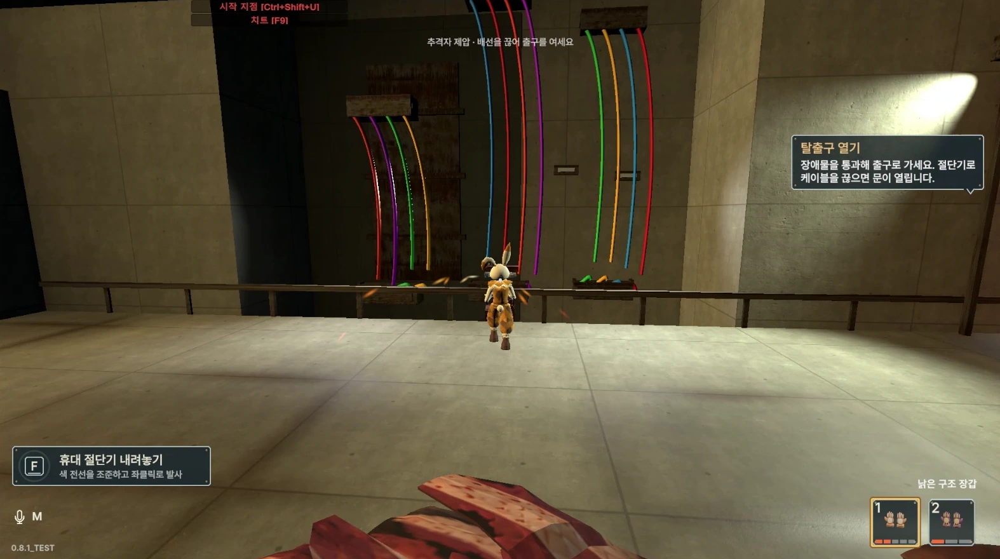
출구 · 배선 절단 11.16 개발 녹화 · 출구 앞 배선 절단 Milestone comparison
세 빌드에서 달라진 첫 플레이와 탈출 M1은 본 공연에서 조작 학습, M2는 리허설 추가, M3는 대기실부터 준비 목표 안내
첫 플레이 로비 인간 대포 탐색과 탈출 마지막 압박 외줄 공연 탈출의 끝
M1 출연 서명 뒤 첫 공연 발판으로 진입. 줄을 고르며 현장에서 익히는 조작 0.1.0 · 2인 직접 플레이 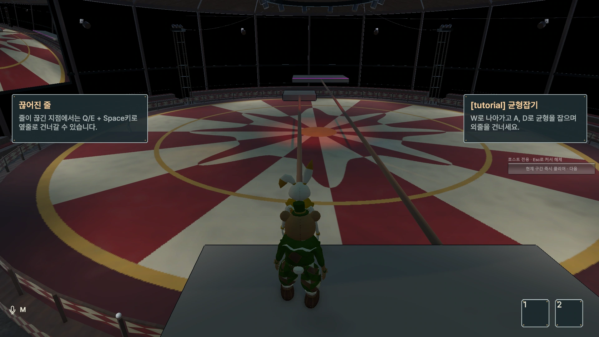
M2 첫날 리허설의 짧은 외줄. 점프와 균형 입력을 연습한 뒤 본 공연으로 0.2.2 · 2인 직접 플레이 M3 대기실에서 준비 목표를 확인한 뒤 공연과 탐색으로 0.8.9 · 최종 테스트 녹화 M1 두 단원의 출연 명단 서명, 방장의 커튼 레버 조작 0.1.0 · 2인 직접 플레이 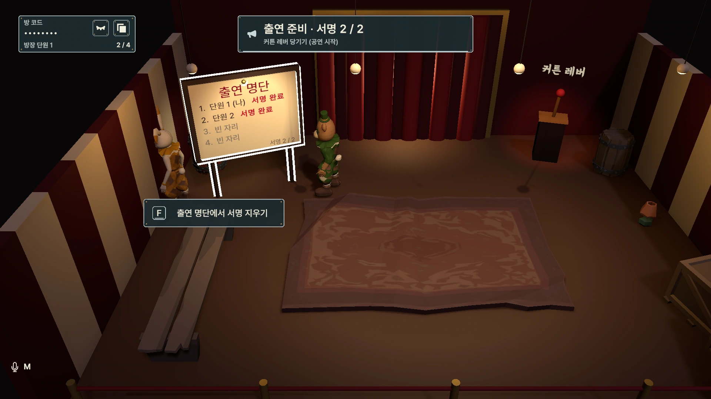
M2 같은 출연 명단 앞의 두 단원. 달라진 캐릭터 외형과 화면 위 서명 상태 0.2.2 · 2인 직접 플레이 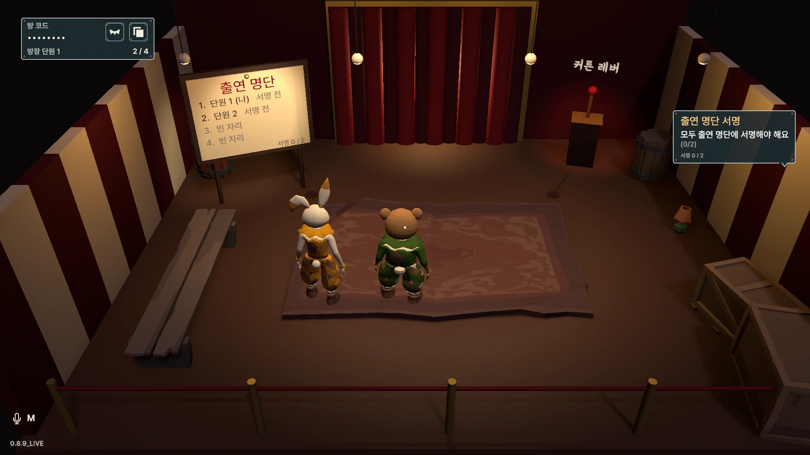
M3 입장 직후 오른쪽에 뜨는 서명 안내. 처음 다가갈 오브젝트부터 표시 0.8.9 · 2인 직접 플레이 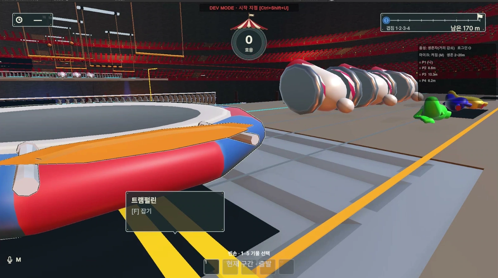
M1 초기 공연장 발사대. 결과가 기록된 대포 공연 2회 모두 실패 10.21–22 · M1 개발 녹화 M2 탑승 후 두 번째 입력으로 발사. 공중에서 처음 보이는 다음 착지 구간 0.2.2 · 공연 선택 후 직접 플레이 M3 지상 담당의 출발점에서 나란히 보이는 트램펄린과 대포 M3 · 공연장 씬 재촬영 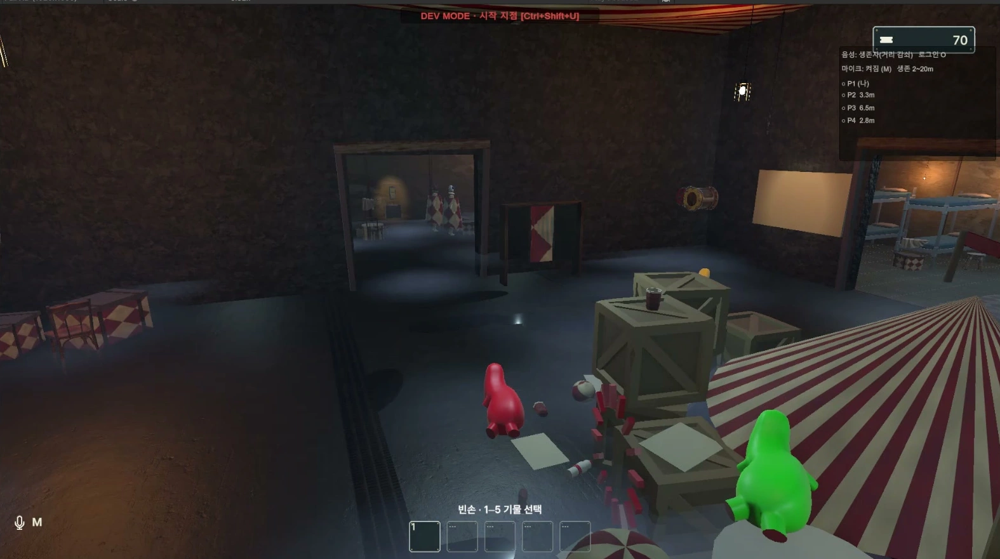
M1 대기실 탐색까지 구현한 단계. 탈출로와 엔딩은 이후 빌드에 추가 10.21–22 · M1 개발 녹화 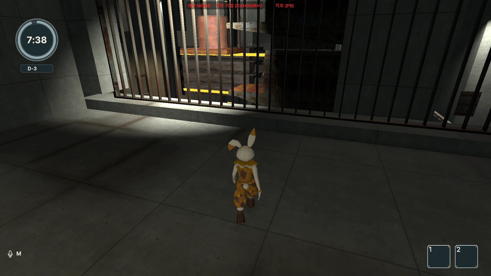
M2 철창 너머로 보이는 진입 방향과 화면 왼쪽에서 줄어드는 남은 시간 0.2.2 · 탈출로 선택 후 직접 플레이 M3 높이가 다른 발판과 이동봉. 같은 출구로 향하는 여러 경로 0.8.9 · 최종 테스트 녹화 탈출로 구현 전
M1 M1 테스트 범위는 두 공연과 대기실까지 M1 제출 범위 M2 정해진 시간 안에 남은 코스 통과. 먼저 도착해도 동료의 시계는 계속 진행 11.05 · M2 개발 녹화 M3 마지막 작업장에 모인 추격자들. 모든 배선을 끊고 추격자 전원을 쓰러뜨린 뒤 출구 개방 0.8.9 · 최종 테스트 녹화 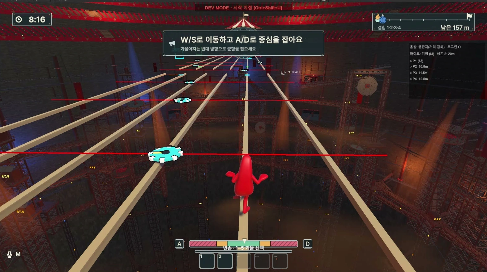
M1 · 첫 외줄 10.21–22 개발 녹화 · M1 제출 당시 협동 관문과 일부 정면 톱 비활성 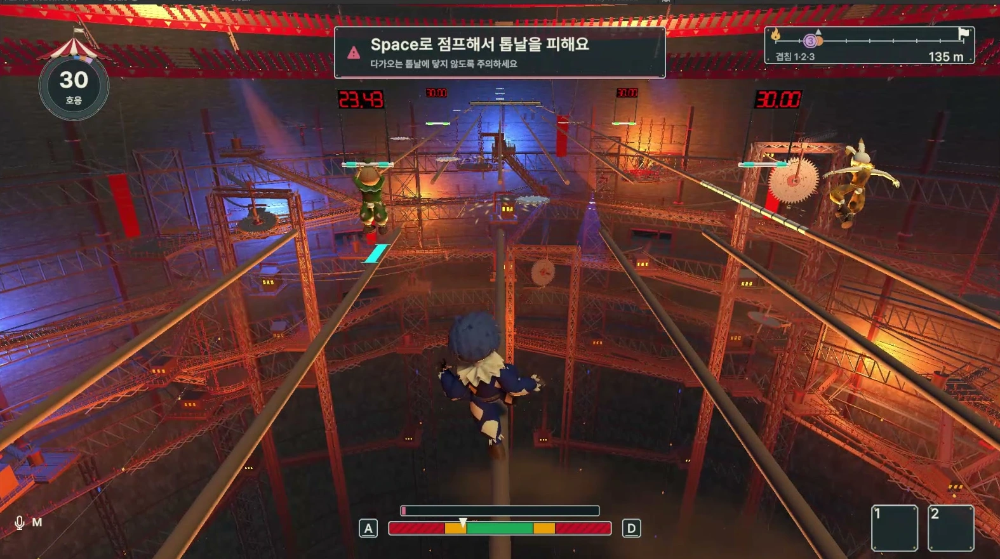
M2 · 회전 톱 11.05 개발 녹화 · 톱 앞 점프 안내. 추락 로그 15건 중 11건이 두 번째 구간 회전 톱에 집중 M3 · 봉과 외줄 0.8.9 최종 테스트 녹화 · 줄 위에서 확인하는 봉 잡기 입력과 다음 목표 탈출 엔딩 구현 전
M1 · 공연과 대기실 당시 빌드의 플레이 범위는 공연과 대기실까지 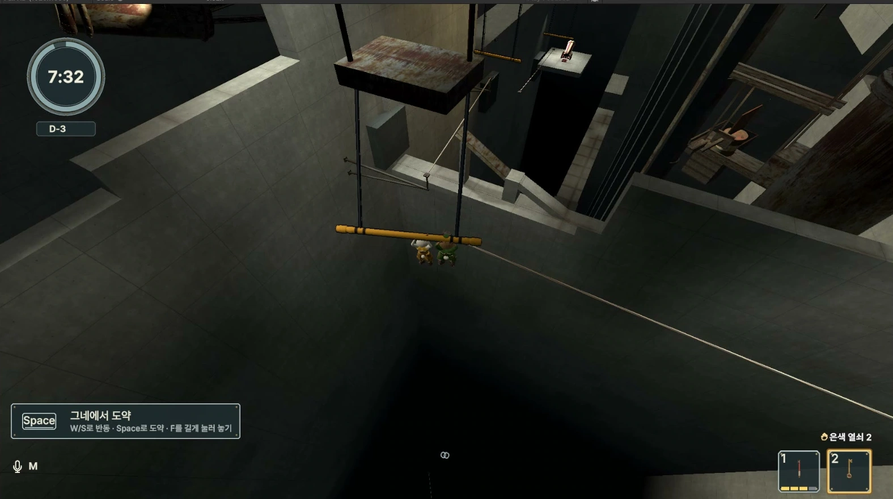
M2 · 탈출로 첫 구현 11.05 개발 녹화 · 공연에서 익힌 기물을 연결한 첫 탈출로. M2 설문에 남은 출구 방향과 배선 찾기의 어려움 M3 · 탈출 성공 0.8.9 최종 테스트 녹화 · 실내 작업장 너머 밝은 갈대밭에서 확인하는 생존·탈출 결과 직접 플레이 화면은 해당 배포 빌드에서 1920 × 1080으로 재촬영. 개발 녹화와 씬 재촬영은 장면별 캡션에 표기
Production
팀장으로서 정한 개발 순서
보상보다 묘기 자체를 먼저 검증. 씬별 분업 후 서로 달라진 조작 규칙 재정비
09.23 외줄 그레이박스 테스트
첫 제작 대상은 묘기 그레이박스. 보상을 붙이기 전에도 친구와 다시 하고 싶은 공연인지부터 확인
외줄에서 동료를 피해 뛰는 순간, 균형을 잡으려던 입력이 줄 바꾸기로 이어지는지 관찰
10.06 기능별 분업을 씬 단위로
기획·개발·에셋으로 흩어진 작업을 공연장과 대기실 등 씬 단위로 묶는 분업안 제안
씬 사이의 조작 차이가 가장 큰 걱정. 다음 빌드에서 같은 봉을 잡고도 씬마다 다른 반응 확인
다음 분업 때는 씬을 배정하는 날 공통 조작 담당자와 합동 테스트 일정까지 확정
10.08 대포 기획안의 두 가지 통과 기준
둘이 배운 규칙 그대로 넷이 공연할 수 있을 것
한 사람이 묘기 중일 때도 동료에게 판단할 일이 있을 것
11.03 구현 검토와 다인 플레이 검증
남은 기능을 필수·선택·제외로 분류
Jira 개편안과 체크리스트에 구현 검토가 끝난 항목과 다인 플레이 검증이 필요한 항목을 구분
11.10 공연장과 탈출로의 공통 조작
이동·외줄·봉·트램펄린 규칙을 공통 설정으로 통합
케이블이 긴 씬에서만 멀리 뛰던 봉. 겉으로 보이는 줄 길이와 도약 계산을 분리해 연습실과 탈출로에 같은 타이밍 적용
작업 노트와 기획서 기획 도해와 플레이 화면을 눌러 확대
Design process
탈출로 제작 과정
첫 작업 노트에 남긴 원칙은 큐브와 기본 도형만으로 한 판 완성하기
첫 확인 지점은 발사 직후. 공중에 뜬 나와 땅에 남은 친구가 각각 어디를 보고 언제 움직일지
공연에서 익힌 조작을 다음 씬의 이동 수단으로 재사용
공중과 지상의 역할 분담 비행자와 지상 담당자의 출발 위치를 나눈 대포 기획도 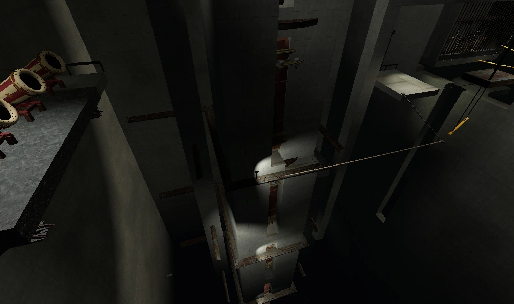
첫 발사대 너머의 착지점 첫 대포에서 건너편 외줄과 다음 그네까지 보이는 배치 직접 플레이한 착지 장면 M2 개발 빌드 · 대포 발사 직후 외줄 착지 Reflection
테스트 결과와 후속 검증 그레이박스에서 궁금했던 건 친구와 묘기를 한 번 더 하고 싶은지. M1에서 처음 마주한 문제는 묘기에 닿기도 전에 길을 잃는 플레이어
실패한 플레이어의 다음 시도
10월 26일 작업 노트에 남긴 원칙. 어느 씬에서나 같은 입력으로 외줄을 바꾸고 봉을 잡을 것
떨어진 친구가 “이번엔 조금 늦게 뛰어 보자”고 말할 수 있는 조건은 다음 시도에도 믿을 수 있는 조작
마지막 구간에서 확인하고 싶은 것
반환교의 한쪽은 외줄부터, 반대쪽은 봉부터. 다친 동료가 익숙한 길을 골라도 같은 출구에서 합류
마지막에 보고 싶었던 장면은 공연에서 익힌 요령으로 누가 먼저 건너고 누가 남을지 우리끼리 정하는 순간
DOLL EYE PINBALL / NHN Game × AI 해커톤
장난감이 잃어버린 유리눈으로 핀볼 저주받은 장난감의 몸속이 보드, 되돌려 줄 눈이 공. 세 웨이브를 거쳐 장난감 형상의 보스 안에 있는 저주 핵을 노리는 다크 판타지 핀볼 로그라이트
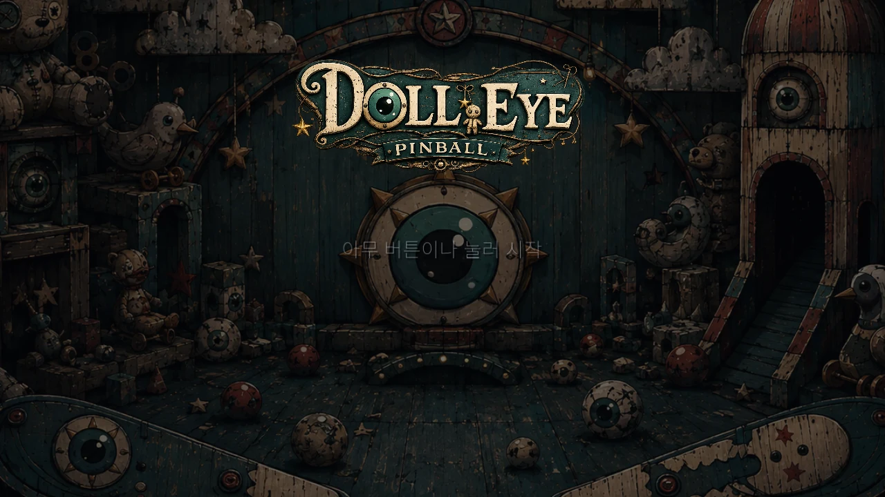
Godot 4 · 3인 팀 · 2026.07.14–08.10
한 판의 흐름 웨이브 전 수리부품 배치 → 플리퍼와 패링으로 공의 경로 조절 → 보상 선택과 재배치 → 보스전
내 담당 PM, 보드와 웨이브 설계, 수리부품의 소켓·배치·발동 조건, 밸런스 검수. 기획 4종 중 웹 빌드 반영 3종
배치를 고민하게 만든 규칙 별빛 브로치 기획 예시. 브로치를 맞힌 뒤 다른 부품 두 개를 거쳐 다시 브로치로 돌아오면 보상. 지금 콤보를 이어갈지, 떨어질 공을 먼저 살릴지 플레이어의 선택
팀 기여 게임의 원안과 플리퍼·패링, 보상 콘셉트는 팀원이 주도 공의 외곽은 고정, AI 작업은 홍채 질감에 집중 시안 네 개를 확대해 홍채·동공 경계 확인. 저장소의 보상 공 제작 기준은 외곽 재사용, 몸체와 동공 레이어 분리, 44px 표시 크기에서 장식 식별 여부 검수
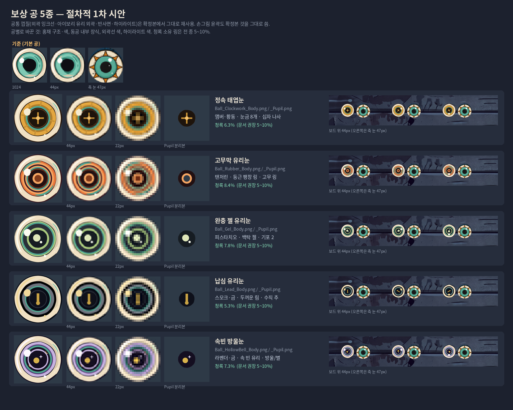
팀 보상 공 아트 자료 · 최종 5종 비교 시트 웹 빌드 플레이 웨이브 설계 원문 보상 공 제작 기준
주형락 / 경력과 활동
게임 QA에서 팀 제작까지
펄어비스 · 붉은사막 QA 출시 전 콘솔 빌드 66근무일. 메인 챕터·의뢰·일상 콘텐츠 플레이, OBS 녹화, 컷신·더빙 검수, 버그·크래시 재현과 Jira 보고
KeyMix · G’olem AI 게임 어시스트 창업 프로젝트 팀장·PM. 시장 조사, Figma 화면 설계, 사업계획서·피치덱 작성, 개발·디자인 일정 조율. 학생 창업유망팀 300+ 서류·발표 심사 통과
디벨로켓 게임기획 38기 시스템·콘텐츠 기획과 데이터 테이블 실습. 팀 실습 두 차례 팀장, 《커튼콜》의 Unity 기획·구현 포트폴리오 제작 · 주형락의 프로젝트 기록과 기존 웹 포트폴리오 기반. 지원용 구성, 문장 편집, 웹 구현과 동작 점검에 Codex 활용